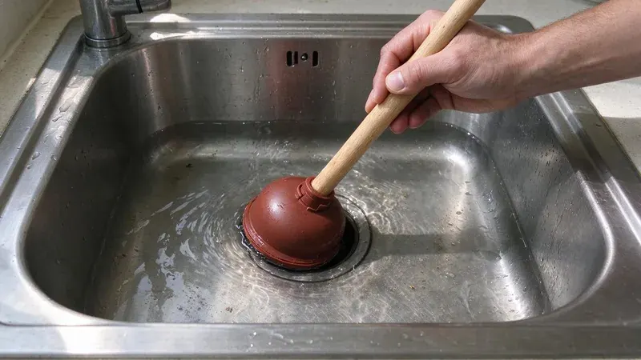

The kitchen drain takes more abuse than any other line in the house. Food scraps, cooking oil, coffee grounds and dishwasher discharge go down it every day. Nobody notices until water stands in the basin. Kitchen backups are one of the most common calls we run in Missouri, and nearly all of them trace to the same few causes.
What Causes Kitchen Sink Backups
Grease is the main culprit. Bacon fat and pan drippings go down hot and liquid, then set up like candle wax once they hit the cool trap and branch line. That layer grabs food particles and builds into a thick, sticky plug. Where the water is hard, calcium scale and soap residue bond with the grease into a crust that hot water alone will not touch.
Groundwater from limestone areas is especially hard, which makes softeners and regular water heater flushing worthwhile.
Garbage disposals come next. A disposal grinds food, but it does not make it disappear. Fibrous stuff like celery, corn husks, artichoke leaves and onion skins wraps around the grinding plate and mats up in the drain. Pasta and potato peels turn to paste once they soak. Coffee grounds and eggshells never dissolve and settle in low spots like sand.
Some causes are harder to spot. In older houses, metal drain pipe corrodes and roughens inside, which gives debris a place to snag. A clogged dishwasher drain hose, or one installed without a high loop, can push water back into the sink. When the roof vent is plugged with leaves or a bird nest, the drain slows down and gurgles. If both sides of a double sink back up together, the clog is past the tee where they join.
Quick Fixes You Can Try
Start with the simple stuff before anything stronger. These steps clear the majority of slow or standing sinks:
- Check the disposal. Kill the power, then use the 1/4 inch hex key in the bottom of the unit to free a jam and press the red reset button.
- Plunge with the other side sealed. On a double sink, plug the second drain with a stopper or wet rag so the plunger pressure goes at the clog.
- Pull the P-trap. Set a bucket underneath, loosen the two slip nuts and clean out the curved trap by hand.
- Run a hand auger. A small drum auger reaches a few feet into the wall to break up a grease plug.
- Flush with hot water and dish soap once the clog is open, to push loosened grease further down the line.
Skip the chemical drain openers. Caustic and acid products get hot enough to soften PVC and wreck disposal seals, and they eat into old metal pipe. They also make the drain dangerous for whoever opens it next. If plunging and pulling the trap do not work, the clog is likely in the branch line inside the wall. That takes a longer cable.
How to Prevent the Next Backup
Prevention is about what goes down the drain. Pour cooled grease into a can and put it in the trash. Wipe greasy pans with a paper towel before they go in the sink. Scrape plates into the trash or compost and use the disposal only for small, soft scraps with cold water running. Run cold, not hot, so fats stay solid, get chopped and move on instead of melting and coating the pipe downstream.
Once a month, fill the sink with hot water and pull the stopper. The full basin draining at once scours the trap. A water softener helps too, because drain walls with less scale give grease less to grab. Houses with repeat backups usually do better on a professional cleaning every year or two, most of all where the kitchen branch is long or ties into an original cast iron stack.
When to Call a Professional
Some signs mean the problem is deeper than the trap. The sink backs up again within days, water comes up in another fixture, or the dishwasher gurgles. Those point to a branch or main line problem. FGV Plumbing clears kitchen lines with professional cable machines and hydro jetting, and can run a camera to see what is really inside the pipe. Call (816) 330-2338 and we will get the sink draining. A standard kitchen drain cleaning runs about $150 to $350, with jetting priced higher for heavy grease.
Need a licensed plumber in Missouri?
FGV Plumbing answers 24/7 and offers same-day service across Missouri.